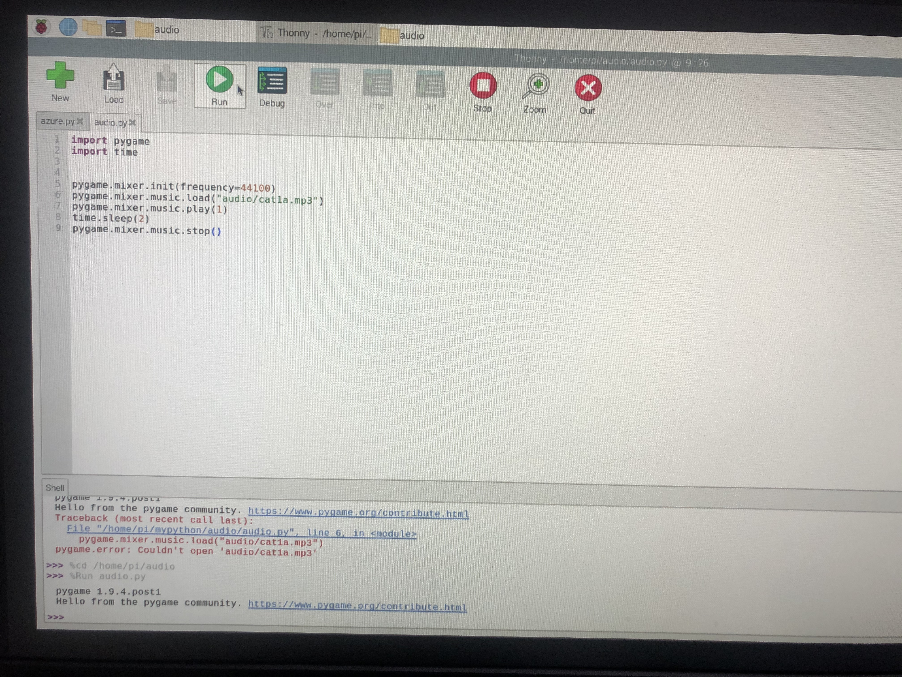
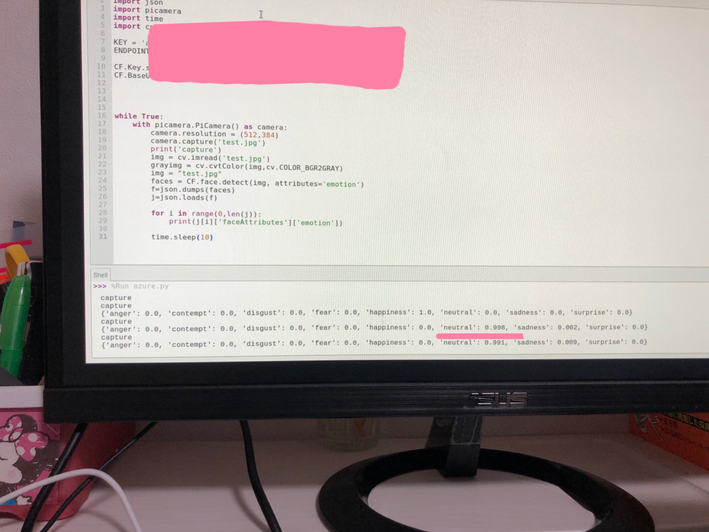
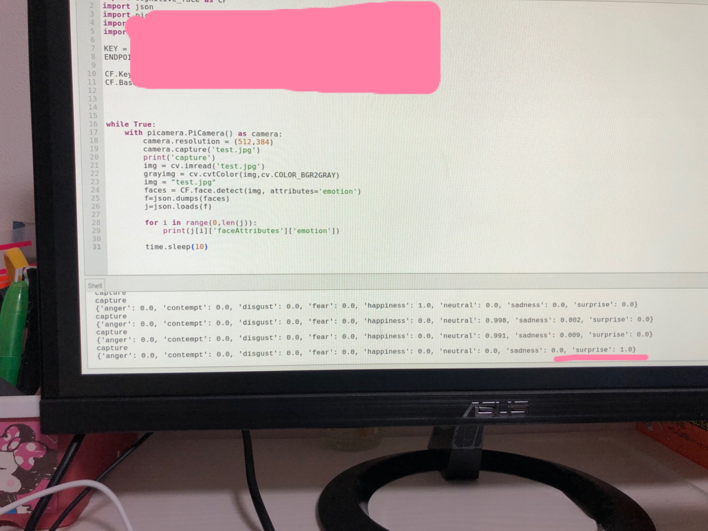

raspberrypi4 猫ちゃんの音声出力🐈
ラズパイのpythonでオーディオファイルを再生
を参照に
猫ちゃんの音声出力を行う。
①猫の音声をダウンロードし、作成したaudioファイルに入れる
②thonny pythonを開き、audio.pyを作成。プログラムを参照サイトよりコピペ

③猫の音声が出力される
https://youtu.be/Fwvma3aJOFI
◆neutralの時

◆surprizeの時
